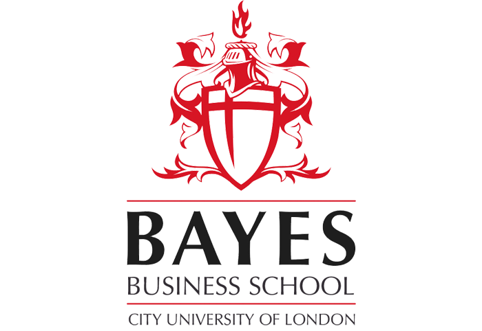

Narges Mohammadi
Assistant Professor of Analytics
Bayes Business School
About Me
I hold a Doctoral Degree in Analytics and Operations from Imperial College Business School, where I was supervised by Prof. Reza Skandari. My doctoral thesis, “From One-size-fits-all to Tailored Care: Navigating Trade-offs in Efficiency, Equity, and Interpretability in Healthcare Delivery”, explored ways to optimize healthcare delivery by balancing efficiency, equity, and actionable insights.
I am currently a Post-doctoral researcher at the Centre for Health Economics and Policy Innovation (Imperial College Business School), working with Prof. Franco Sassi and the Pandemic Preparedness Research Group, collaborating with Prof. Marisa Miraldo and Prof. Katharina Hauck across Imperial Business School and the School of Public Health.
My research sits at the intersection of data-driven optimization, health economics, and decision analytics. I develop and apply quantitative models to support strategic and operational decision-making in healthcare and public policy. My recent work focuses on sequential decision-making and dynamic optimization, aiming to improve efficiency, equity, and patient outcomes through personalized, actionable interventions.
I collaborate with clinicians, policymakers, and industry partners in the UK and USA, leveraging data science and optimization to design practical solutions for real-world healthcare and system-level challenges.
In my free time, I enjoy baking cakes and cookies, playing piano, and traveling.
Update: I will be joining Bayes Business School as an Assistant Professor of Analytics in Summer 2026. I welcome inquiries and collaboration opportunities.